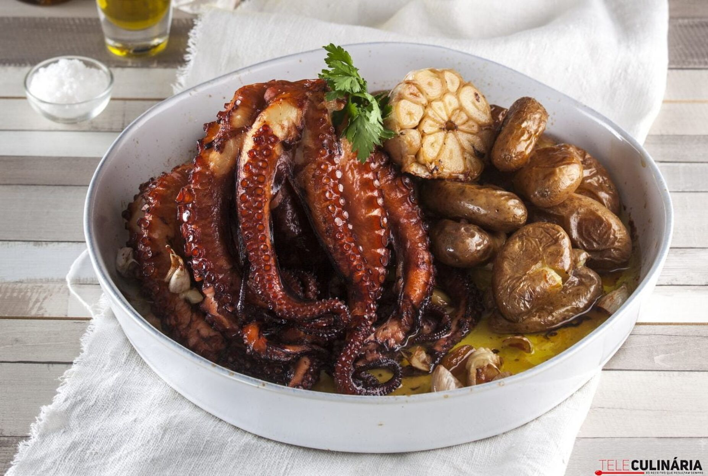
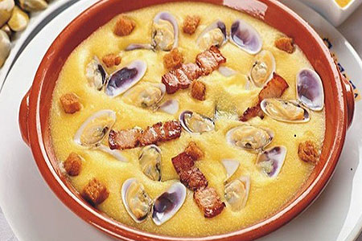
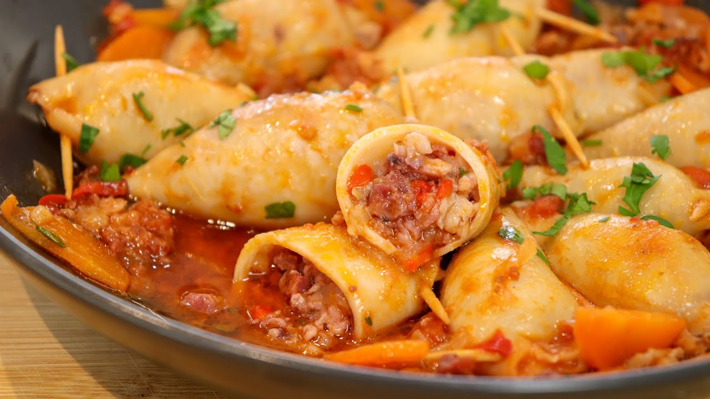

O cozido à portuguesa é um prato tradicional da culinária portuguesa, conhecido pela sua riqueza de sabores e ingredientes.

Polvo à lagareiro 12,50€
O polvo à lagareiro é um prato tradicional da culinária portuguesa, conhecido pelo seu sabor delicioso e pela abundância de azeite utilizado na sua preparação.

Xarém com conquilhas 12,50€
O xarém com conquilhas é um prato tradicional da culinária algarvia, conhecido pelo seu sabor único e pela combinação de ingredientes simples e deliciosos.
Bacalhau com natas 17€
O Bacalhau com natas é um prato tradicional da culinária portuguesa, conhecido pela sua cremosidade e sabor irresistível.

Lulas recheadas 16€
As lulas recheadas são um prato típico da gastronomia portuguesa, e existem várias variações dessa receita em diferentes regiões do país.